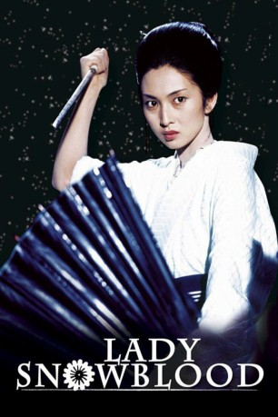
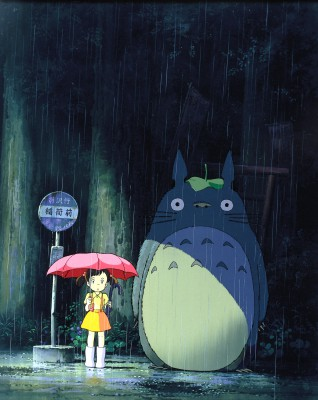

#2536 Lady Snowblood *OmU*
 gesehen am 23.11.2015
gesehen am 23.11.2015
 
 IMDB-Wertung: 7.7 / 10
IMDB-Wertung: 7.7 / 10  Metascore: 0
Metascore: 0 
"Lady Snowblood" ist die Geschichte einer jungen Frau, die von ihrer Mutter einzig zum Zwecke der Rache an der Auslöschung ihrer Familie geboren wurde. Von einem Priester zur Killerin ausgebildet beginnt sie einen unbarmherzigen Rachefeldzug.
Japanisch mit dt. Untertiteln
Jahr: 1973
Dauer: 97 Minuten
FSK: 16
Land: Japan Studio: Rapid Eye MoviesTonspuren:
Untertitel: Deutsch,
Auflösung: 1080p (1920x824) Größe: 5601 MB
Genre: Action, Thriller, Drama
Regisseur: Toshiya Fujita
Drehbuch: Kazuo Kamimura, Kazuo Koike, Norio Osada
Soundtrack: Masaaki Hirao
Darsteller:
- Eiji Okada als Gishirô Tsukamoto
- Meiko Kaji als Yuki Kashima, Shurayuki-hime
- Toshio Kurosawa als Ryûrei Ashio
- Masaaki Daimon als Gô Kashima
- Miyoko Akaza als Sayo Kashima
- Shinichi Uchida als Shirô Kashima
- Takeo Chii als Tokuichi Shôkei
- Noboru Nakaya als Banzô Takemura
- Yoshiko Nakada als Kobue Takemura
- Akemi Negishi als Tajire no Okiku
- Kaoru Kusuda als Otora Mikazuki
- Sanae Nakahara als Kitahama, Okono
- Hôsei Komatsu als Genzô Shibayama
- Makoto Matsuzaki als Daikashi
- Hiroshi Hasegawa als Daihachi Kachime
- Takehiko Ono als
-  Hitoshi Takagi als Matsuemon
- Mayumi Maemura als Young Yuki
- Kenji Ôkura als Henchman
- Ichirô Kijima als
- Shôichi Hirose als
- Kai Atô als Henchman
- Kô Nishimura als Priest Dôkai
Datei: X:\HD-Eastern-Classic(A-M)\Lady Snowblood (OmU) (1973, FSK16, 1920x824).mkv seit 19.11.2015
Festplatte: HD Eastern+Western
 Es gibt insgesamt 63 Filme in der Gruppe 'HD-Eastern-Classic(A-M)'
Es gibt insgesamt 63 Filme in der Gruppe 'HD-Eastern-Classic(A-M)'